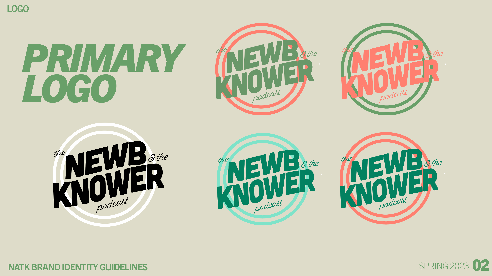
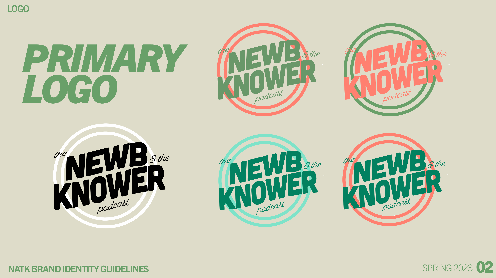

The Newb and the
Knower Podcast
Spring 2023
Marketing, Logo Design, Branding
The Newb and The Knower Podcast is a Chicago-based fly fishing podcast that brings expert advice and insights to its audience. Each episode features seasoned fly fishing professionals sharing valuable tips and techniques, along with explorations of diverse fishing locations and new spots.
The Newb & The Knower Podcast approached me to create a unique brand identity and logo design that would encapsulate their mission of making learning accessible and enjoyable for everyone. Each season, this podcast pairs a curious beginner with an experienced expert to tackle new skills, empowering listeners to bridge the gap from “newb” to “knower.” This season’s theme—fly fishing—served as inspiration for the brand’s visual identity.
I was also commissioned to develop marketing materials for the podcast, specifically for their new "Adventures" series. To capture the essence of adventure and exploration, I designed travel postcards that evoke a vintage, warm aesthetic. I carefully edited the provided photos and selected complementary font pairings to achieve this desired effect.


Brand Identity:


 
